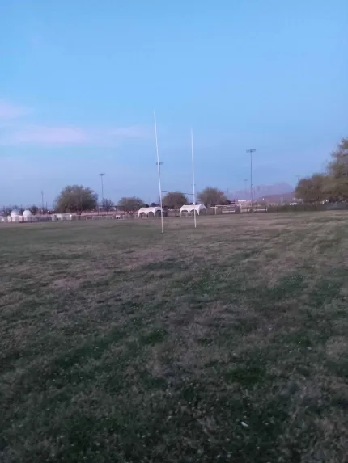

Series I: Geographical pictures

The first picture of a Mabruenian province.
Date: March 23rd, 2026.Official Visual Records and Historical Holdings
← Return to Main Archives
The first picture of a Mabruenian province.
Date: March 23rd, 2026.